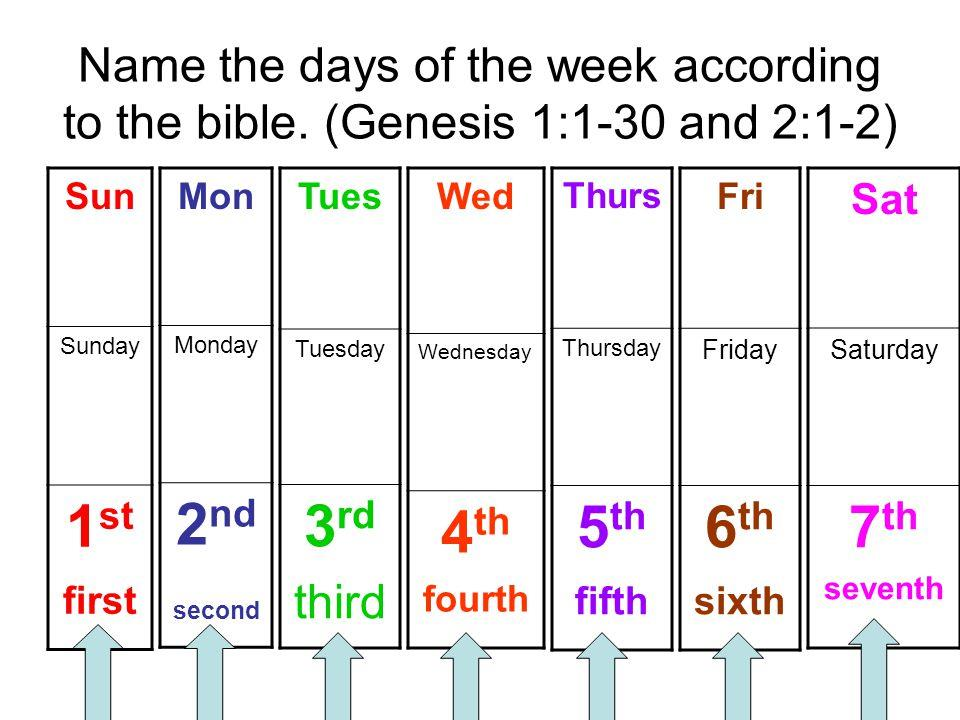

Inhoud

Die heel eerste ding voordat jy kan kyk na watter dag die Skriftuurlike Sabbat is: jy moet weet wie JY is.
Is jy deel van die Nuwe Testamentiese kerk of is jy deel van Israel? Daar is ‘n groot verskil.
En as jou antwoord is die Nuwe Testamentiese kerk, dan is my vraag aan jou: hoe is Rom. 11 op jou van toepassing? Kom ons kyk wat sê dit:
Rom 11:1 Ek vra dan: Het God miskien sy volk verstoot? Nee, stellig nie! Want ek is ook ‘n Israeliet uit die nageslag van Abraham, van die stam van Benjamin. (AOV 1933/53)
Gal 3:6 Net soos Abraham in God geglo het, en dit is hom tot geregtigheid gereken. 7 Julle verstaan dan dat die wat uit die geloof is, hulle is kinders van Abraham. (AOV 1933/53)
Hierdie is geskryf deur een van die skrywers van die Nuwe Testament. En dit is die Bybel wat jy seker jou lewe lank gebruik.
So jy moet jouself dan die vraag vra: “Is ek uit Abraham gebore?” Jy is mos iemand wat uit die geloof is, is jy nie?
Uit jou antwoord, wat baie duidelik “JA” moet wees, is jy uit Israel en deel van Israel! As jy nog nie seker is nie, lees weer die Skrifte hierbo aangehaal en laat toe dat die Skrif die Skrif verduidelik.
Kom ons lees verder:
Paulus praat met die nasies. Dit is vertaal heidene. Kyk wat sê Strongs Dictionary:
G1484 ἔθνος ethnos eth'-nos
Probably from G1486; a race (as of the same habit), that is, a tribe; specifically a foreign (non-Jewish) one (usually by implication pagan [omdat hul in afgodery verval het. Presies wat die kerk vandag kom doen het]): - Gentile, heathen, nation, people.
Kom ons kyk na die Ou Testamentiese term uit die Hebreeus vir die Nuwe Testamentiese term “ethnos” hierbo uit die Grieks.
H1471. goy ►
Strong's Concordance goy: nation, people
Original Word: ּגֹוי
Part of Speech: noun masculine; proper name, of a people
Transliteration: goy
Phonetic Spelling: (go'-ee)
Definition: nation, people
NAS Exhaustive Concordance
Word Origin from the same as gav
Definition nation, people
NASB Translation every nation (2), Gentiles (1), Goyim (1), Harosheth-hagoyim* (3), herds (1), nation (120), nations (425), people (4).
Die Nasies is ingeënt
Rom 11:11 Ek vra dan: Het hulle miskien gestruikel om te val? Nee, stellig nie! Maar deur hulle val het die saligheid tot die heidene [nasies] gekom om hulle jaloers te maak. 12 En as hulle val die rykdom van die wêreld is en hulle tekort die rykdom van die heidene [nasies], hoeveel te meer sal hulle volheid dit nie wees nie! 13 Want aan julle heidene [nasies] sê ek: Vir sover as ek ‘n apostel van die heidene [nasies] is, verheerlik ek my bediening 14 as ek tog maar net my eie volk [Judeërs/Jode] jaloers kan maak en sommige uit hulle kan red! 15 Want as hulle verwerping die versoening van die wêreld is, wat sal hulle aanneming anders wees as lewe uit die dode? 16 En as die eerstelinge Heilig [afgesonder] is, dan die deeg ook; en as die wortel Heilig [afgesonder] is, dan die takke ook. 17 En as sommige van die takke afgebreek is, en jy wat ‘n wilde olyfboom was, onder hulle ingeënt is en deel gekry het aan die wortel en die vettigheid van die olyfboom, 18 moet dan nie teen die takke roem nie; en as jy roem dit is nie jy wat die wortel dra nie, maar die wortel vir jou. 19 Jy sal dan sê: Die takke is afgebreek, sodat ek ingeënt kon word. 20 Goed! Deur ongeloof is hulle afgebreek, maar jy staan deur die geloof. Moenie hoogmoedig wees nie, maar vrees. 21 Want as God die natuurlike takke nie gespaar het nie, sal Hy miskien jou ook nie spaar nie. 22 Let dan op die goedertierenheid en die gestrengheid van God: gestrengheid oor die wat geval het, maar goedertierenheid oor jou as jy in die goedertierenheid bly; anders sal jy ook afgekap word. 23 Maar ook hulle sal, as hulle nie in die ongeloof bly nie, ingeënt word; want God is magtig om hulle weer in te ent. 24 Want as jy afgekap is van die olyfboom wat van nature wild was, en teen die natuur op die mak olyfboom ingeënt kan word, hoeveel te meer kan hulle dan wat dit van nature is, op hul eie olyfboom ingeënt word? (AOV 1933/53)
As jy nogsteeds sê jy is nie ingeënt by Israel nie, kan jy nie op die beloftes van die Skrif staatmaak nie, want dit is vir Israel [daar is BAIE Jode wat tot geloof in Yeshua hul Messias gekom het], NIE vir die Nuwe Testamentiese kerk nie. OOK kan jy nie op die Messias staatmaak nie, want ook Hy is vir Israel. Hoor wat Yeshua self sê:
Matthéüs 15:24 Toe sê Yeshua: “God het My gestuur net na die mense van Israel. Hulle is soos verlore skape.” (1983 vertaling)
1933 Vertaling: Maar Hy antwoord en sê: Ek is net gestuur na die verlore skape van die huis van Israel.
Die Messias was voor sy dood, begrafnis en opwekking en ook NA sy dood, begrafnis en opwekking deel van Israel. NIE ‘n Nuwe Testamentiese kerk nie!!
Die neiging onder die leraars en pastore om na Deut. 5 te kyk en te sê dat die Ou Testament is vir die Jode gegee, maar nie vir die Nuwe Testamentiese kerk nie, is oneerlik en vals. ‘n Bedoeling om ‘n ontkoppeling van die Messias met sy historiese verlede te bewerkstellig. Dit is iets wat hyself nie gedoen het nie. Kyk na Lukas 24:44:
En Hy sê vir hulle: Dit is die woorde wat Ek met julle gespreek het toe Ek nog by julle was, dat alles wat oor My geskrywe is in die wet van Moses en die profete en die psalms, vervul moet word.
Luister na die Ware Leraar! Bestudeer die Skrif vir jouself en mediteer daaroor. JY wat hier lees gaan bepaal of jy die waarheid soek en of jy jou ore gestreel wil hê soos Timoteus van praat:
2Tim 4:3 want daar sal ‘n tyd wees wanneer hulle die gesonde leer nie sal verdra nie, maar, omdat hulle in hul gehoor gestreel wil wees, vir hulle ‘n menigte leraars sal versamel volgens hulle eie begeerlikhede, 4 en die oor sal afkeer van die waarheid en hulle sal wend tot fabels.
Yeshua het nie verniet gesê:
Matthéüs 5:17 Moenie dink dat Ek gekom het om die wet of die profete te ontbind nie. Ek het nie gekom om te ontbind nie, maar om te vervul.
“Moenie dink dat Ek gekom het om die wet of die profete ongeldig te maak nie. Ek het nie gekom om hulle ongeldig te maak nie, maar om hulle hulle volle betekenis te laat kry.” (1983 Vertaling)se verlossing
18 Want voorwaar Ek sê vir julle, voordat die hemel en die aarde verbygaan, sal nie een jota of een titteltjie van die wet ooit verbygaan totdat alles gebeur het nie. 19 Elkeen dus wat een van die minste van hierdie gebooie breek en die mense só leer, sal die minste genoem word in die koninkryk van die hemele; maar elkeen wat dit doen en leer, hy sal groot genoem word in die koninkryk van die hemele.
Noudat ons bepaal het dat jy deel van Israel moet wees om deel aan Yeshua se verlossingwerk en die
Verbondsbeloftes te kry, kom ons gaan terug na ons studie oor wanneer die Sabbat/Shabbat is. Baie mense is steeds verward oor hierdie kwessie, maar sulke verwarring is heeltemal onnodig. Die antwoord is nie net duidelik te vinde in die Skrif/Bybel en die Geskiedenis nie, maar dit blyk ook duidelik uit die name vir die Sewende dag van die week, Saterdag, in baie tale van die wêreld.
In die Skrif, Genesis 1 & 2 lees ons dat die Almagtige Skepper YHWH, Ses [6] dae gewerk het en die Sewende Dag Gerus het. Onmiddelike ontstaan die vraag; Hoekom sal ons Almagtige Skepper YHWH, dan 'rus' nodig hê...?
Nee, ons Almagtige Skepper YHWH, het GEEN Begin en Einde en raak nie moeg nie.
Maar as Formeerder van die mens en die natuur, WEET ons Almagtige Skepper YHWH dat die mens rus sal nodig hê, EN word die Voorbeeld deur ons Almagtige Skepper YHWH gestel; Rus op die Sewende Dag.
Ook is die Sewende Dag, 'n simboliese kleed repetisie, 'n heenwyse na die Sewende Dag, die 1000jarige Vredesryk die Sewende Millinium. [Heb. 4, Open. 20]
As Gelowige in Yeshua Messiah gaan ons dan verder en kyk na die Voorbeeld wat Yeshua gestel het.
- - Yeshua het die Sabbat getrou ooreenkomstig die Torah nagekom en soos sy gewoonte was, het hy op die Shabbat, die sewende dag, na die sinagoge gegaan.
- - Yeshua het die Sabbat saam met mede-gelowiges gehou.
- - Die mede-gelowiges wat saam met Yeshua gewandel het, het ook getrou die Shabbat onderhou. (Sien 85 keer in die boek van Handelinge)
- - Op geen plek in die Skrifte sal ons vind dat Yeshua, die mede-gelowiges aangespreek het omrede hulle dan die Sabbat op verkeerde Dag gehou het nie.
Met bg, Skriftuurlike feite ingedagte, is dit dan logies dat hierdie Sabbat Dag op die regte Dag gehou was.
Al wat ons nou moet uitklaar; is die ritme van hierdie weeklikse Dag die afgelope 2000 jaar ontwrig?
‘n Volledige studie is op ons webwerf om hierdie te bestudeer. Hier is die skakel: [Kliek op SKAKEL]
Daarvoor gaan ons kyk wat die geskiedenis ons leer.
- - Is daar enige geskrewe bewys dat uit die geledere van die Israeliete, hetsy jy hulle wil Jode, die Judeërs, die Farriseërs noem – of hierdie Sewende Dag verander het? [Ons weet dat hulle baie streng is met die aantekening van gebeurtenisse]
- - Dit is duidelik dat die Fariseërs in die eerste eeu, die tyd van die Messias die Sabbat bitter ernstig opgeneem het en ‘n oorsigtelike blik op al vier die Evangelies sal dit bevestig. Maar dieselfde geld vir die volgelinge van die Messias, die dissipels – ook hulle het eweneens die Sabbat getrou en ernstig onderhou.
Waar het dan die ontkoppeling van die gelowiges van die Sabbat en trouens die hele Torah [Wet] gebeur, want ons sien dat mense soos Pilatus en andere toegelaat het dat die Jode/ Hebreërs /Israeliete van die eerste eeu voortgaan om hulle God op hulle godsdienstige dae te aanbid?
Wat het gebeur wat veroorsaak het dat hierdie voorreg opgeskort is?
Want dit het nie gebeur in die tyd van die dissipels van die Messias wat sy dood aanskou het en sy opwekking ervaar het nie – dieselfde dissipels wat die doping in die Heilige Gees ervaar het, het niks te doen gehad met hierdie sogenaamde wysiging in die Sabbatdag nie.
En, uit die boek van Galasieërs is dit duidelik dat die apostel Paulus hom onderwerp het aan die
Messiasbelydende Raad van Jerusalem en dat hy sy geloof gaan toets het by Jakobus en Petrus. Hy gaan dan voort om na die nasies in die verstrooiing te gaan en op die Sabbatdag – die sewende dag – in hulle sinagoges – hulle toe te spreek.
So, die dissipels wat met die Messias gewandel het was nie verantwoordelik vir die verandering van die Sabbatdag nie. Paulus was nie verantwoordelik daarvoor nie – wie is dan die een wat die verantwoordelikheid moet neem vir hierdie verandering?
Na die afsterwe van Paulus, en ook dissipels soos Petrus en Jakobus, het die Romeine die Tempel vernietig in die jaar 70 na die Messias en dit het nie lank geneem om die hele Torah [Wet], insluitende die Sabbat, voedselwette en besnydenis te verbied nie.
Dit het beide Jode wat in die Messias geglo het en die wat nie in hom geglo het nie ewe erg getref. Vervolging as jy dit sou durf waag om dit uit te leef of toe te pas.
Dit lei in kort na die Romeinse keiser Konstantyn:
- - Ons leer wel dat in 321 nM het die Romeinse keiser Konstantyn die Grote, die eerste burgerlike wet afgekondig het rakende die onderhouding van die Sondag.
Die Romeinse wet verwys na 'n dag van rus op 'die eerbiedige dag van die Son', die Moderne Katolieke se
Sondag-aanbidding. Dit was die Eerste dag van die week, die gewyde dag aan die Son, die nommer een in die Romeinse hemelruim.
Hierdie Romeinse wet verklaar; "Laat die landdros en die inwoners van stede op die eerbiedwaardige Sondag rus, en maak alle werkswinkels toe. In die grondgebeid van die Romeinse Ryk, mag persone wat met landbouwerk besig is, vryelik en wettig hul werk voortsit; omdat dit gereeld gebeur dat 'n ander dag nie so geskik is vir graangewas of vir wingerdplant nie; sulke werk mag nie verwaarloos word nie. "
- - Nietemn in 363 nM. het die Roomse Kerk die besluit van die Raad van Laodicea aanvaar en die dood-straf uitgespreek oor iemand wat die Sewende Dag- Sabbat onderhou.
- - Baie ware Gelowiges het gesterf omdat hulle die Sabbat getrou gehou het. Dink jy regtig dat Gelowiges, wanneer hulle bereid was om hul lewens te gee om YHWH se
Opdragte te onderhou, die regte Dag sou verloor...?
Verder is daar verskeie Romeinse geskiedkundiges wat uitdruklik verwys na die Sabbat van die Judeërs wat op hulle Romeinse kalender aangedui word as op die dag van Saturnus- Saterdag.
Onthou die Romeine het hulle dae vernoem na hul afgode, hetsy planete (Maan, Son, Saturnus) of ander afgode.
* Frontinus Stratagen 2.1.17:
Augustus attacked the Jews on the day of Saturn (SATERDAG) on a day which it is sinful for the Jew to do any work."
* Cassius Dio Roman History 37.16.1-4:
"Thus the defenders (Jews) were captured on the day of Saturn, without making any defence at all."
* The Jewish Sabbath in the Latin Classical writers: Albius Tibullus (c. 55 BC – 19 BC) a Latin poet and writer: Maak melding van die volgende:
"Die Judeërs is "LUI" op die dag van Sarturnus."
* Lives of the twelve Caesars Hfst 32:2:
Suetonius (69nC-130 nM) maak hierin melding van die Judeërs se Sabbat wat plaasgevind het op die 7de dag genaamd die dag van Sarturnus (Saterdag.)
* Tacitus another Roman historian in (Historiae V,4) wrongly thought that the reason Israelite's rest on the Saturday was in honour of the Roman god Saturn" (Rest of Days,p, 244-245).
* “Christians shall not Judaize and be idle on Saturday but shall work on that day; but the Lord’s Day they shall especially honour, and, as being Christians, shall, if possible, do no work on that day. If, however, they are found Judaizing, they shall be shut out from Christ.” Catholic Church Council in Laodicea, 364AD, Canon 29.
* “We are informed that some people in different districts of the kingdom, have adopted and observed Saturday-keeping. It is severely forbidden – in holy church canon – one and all to observe days excepting those which the holy Pope, archbishop, or the bishops command. Saturday-keeping must under no circumstances be permitted hereafter further than the church canon commands. Therefore, we counsel all the friends of God throughout all Norway who want to be obedient towards the holy church to let this evil of Saturday-keeping alone; and the rest we forbid under penalty of severe church punishment to keep Saturday holy.” Catholic Provincial Council at Bergen. 1435 Dip. Norveg., 7, 397.
* Holland and Germany:
Babara of Thiers, who was executed in 1529, declared: “God has commanded us to rest on the seventh day.” Martyrology of the Churches of Christ, commonly called Baptists, during the era of the Reformation, from the Dutch of T.J. Van Braght, London 1850, 1, pp. 113-114.
* Russia: “The accused (Sabbath-keepers) were summoned; they openly acknowledged the new faith and defended the same. The most eminent of them, the secretary of state, Kuritzyn, Ivan Maximow, Kassian, archimandrite of the Jury Monastery of Novgorod, were condemned to death, and burned publicly in cages, at Moscow, Dec. 27, 1503.” (Council, Moscow, 1503). H. Sternberf, Geschichte der Juden (Leipzig, 1873), pp. 117-122.
* Sweden: “This zeal for Saturday-keeping continued for a long time; even little things which might strengthen the practice of keeping Saturday were punished.”
Bishop Anjou, Svenska Kirkans Historia after Motet I Upsala.
* Europe: About the year 1520, many of these Sabbath-keepers found shelter on the estate of Lord Leonhardt of
Lichtensein, “as the princes of Lichtenstein held to the observance of the true Sabbath.” History of the Sabbath, J.N. Andrews, p. 649
* Rumania (1760): “Joseph II’s edict of tolerance did not apply to the Sabbatarians, some of whom again lost all of their possessions.” Jahrgang 2, 254.
* Bohemia and Moravia: “The condition of the Sabbatarians (from 1635 to 1867) was dreadful. Their books and writings had to be delivered to the Karlsburg Consistory to become the spoil of flames.” Adolf Dux,
Aus Ungarn, pp. 289-291. Leipzig, 1880.
- - Sedertdien was ook die Romeinse-kalender se weeklikse ritme nog nooit versteur nie.
* Verdere Geskiedenis;
- - Die Spaanse woord vir die Sewende dag van die week, Saterdag, is byvoorbeeld Sabado - dieselfde woord vir 'Sabbat'. Hulle verwys nie na 'ayer'- Saterdag' nie, maar na Sabado.
- - In meer as 100 antieke en moderne tale is die Sewende dag van die week in werklikheid- 'Sabbat' genoem. Dat die Sabbat wel op die moderne Romeinse en dus Westerse Saterdag val is irrelevant omrede die Sewende Dag, Sabbat lank voor die Roemeine se bestaan reeds onderhou word.
- - Ons haal later nog meer bewyse aan.
Hier volg 'n lys met name vir die Sewende dag van die week, Saterdag, in 24 tale waarin die grondwoord Sabbat BAIE maklik herkenbaar is. Hierdie wydverspreide gebruik van vorme van die woord Sabbat vir die Sewende Dag van die week, 'Saterdag', is 'n duidelike bewys dat sprekers van hierdie tale verstaan watter dag die Sabbat is. Hulle was die Israeliete wat in ballingskap- Verstrooing gegaan het en aanvanklik voortgegaan het met die onderhou van die Sabbat, voordat hulle opgeneem is in vreemde volkere en hul kulture.
Arabies: Sabet.
Armeens: Shabat.
Bosnies: Subota.
Bulgaars: Sabota
Korsikaans: Sàbatu.
Kroaties: Subota.
Tsjeggies: Sobota.
Georgies: Sabati.
Grieks: Savvato
Hebreeus: Shabbat.
Indonesies: Sabtu.
Italiaans: Sabato.
Latyn: Sabbatum.
Maltees: is-Sibt
Pools: Sobota.
Portugees: Sábado.
Roemeens: Sambata.
Russies: Subbota.
Serwies: Subota
Slowaaks: Sobota.
Sloweens: Sobota.
Somali: Sabti.
Spaans: Sabado.
Sudanese: Saptu.
Ukranian: Subota.
Die Sabbat is nie 'n gewone dag nie, want die Skrif leer in Gén 2:3 ‘dat YHWH hierdie Dag- Geseën en dit Apart van ander dae stel, omdat HY daarop gerus het.'
Sal die Skepper en Almagtige YHWH, wat dan ook volgens Paulus die Almagtige van ORDE is en nie wanorde [1Ko 14:33], toelaat dat so 'n belangrike Dag verlore raak in tyd en dus basies onuitvoerbaar wees??
Diesulkes wat hierdie Dag bevraagteken kan geen bewyse lewer dat die Dag wel verlore geraak het in tyd nie. Hulle het wel net een doel en dit is die doel van die ou duiwel sedert daardie lieflike oggend in die tuin in Genesis 3; Hy wil bloot verwarring skep, hy wil twyfel veroorsaak....
Ń DAG OM TE ONTHOU
Ons lewe in ń wêreld met ń vinnige pas. Tegnologie verander byna daagliks. Jy kan nou die nuutste, beste rekenaar op die mark koop, en selfs voordat jy die aangeskakel het, is dit reeds vir alle praktiese doeleindes verouderd en jy moet hom "update."
Mense werk meer en meer ure net om te probeer om "ń lewe te maak," meestal tot die nadeel van ń huwelik, die familie, of selfs hul eie gesondheid.
Die laaste paar jaar het ń reuse toename in ń aantal verskillende stres verwante versteurings gesien.
Ons Skepper het ń beter lewenswyse in gedagte, ń wyse wat Hy met Sy skeppingswerk ingestel het spesifiek tot ons voordeel. Nogtans verwaarloos of verwerp die meeste mense hierdie wyse totaal en al.
Terug na Genesis 1.
IN DIE BEGIN
Die heel eerste hoofstuk in die Skrif:
Genesis 1, skets vir ons die wonderbaarlike werk van die skepping.
Dan lees ons in hoofstuk 2:1-3
So is dan voltooi die hemel en die aarde, met al hulle leërmag. En Elohim [God] het op die sewende dag Sy werk voltooi wat Hy gemaak het, en op die sewende dag gerus van al Sy werk wat Hy gemaak het. En Elohim het die sewende dag geseën en dit afgesonder, omdat Hy daarop gerus het van al Sy werk wat Hy geskape het deur dit te maak.
LW. Vader YHWH [GOD] het die sewende dag en NIE die eerste of enige ander dag geseën en afgesonder nie.
Ons kan verskeie belangrike punte vanuit hierdie teksgedeelte verstaan.
- Dat ons Skepper op die 7de dag gerus het. • Dat Hy dit geseën en dit geheilig (dit afgesonder) het omdat Hy daarop gerus het.
Die eenvoudige feit dat Hy gerus het, het spesiale tyd geskep.
Baie eeue later, na hul verlossing uit Mitsrayim/Egipte van slawerny, is Yisra’el/Israel aan die wonderlike daad herinner.
"Toe het God al hierdie woorde gepraat en gesê:
Ek is YHWH jou Elohim wat jou uit Mitsrayim [Egipte], uit die slawehuis, uitgelei het. Onthou die dag van die Shabbat, dat jy dit afsonder. Ses dae moet jy arbei en al jou werk doen; maar die sewende dag is die Shabbat van YHWH jou Elohim; dan mag jy geen werk doen nie..............Want in ses dae het YHWH die hemel en die aarde gemaak, die see en alles wat daarin is, en op die sewende dag het Hy gerus. Daarom het YHWH die dag van die Shabbat geseën en dit afgesonder."
Dus maak die Skrif dit duidelik dat die gebod om die Shabbat te bewaar/onderhou verbind met Vader YHWH se rus op die 7de dag van die skepping. Dit is inderdaad ń herdenking van die skepping!
Die betekenis van hierdie dag het later uitgebrei:
Deut 5:12-15
"Onderhou die dag van die Shabbat, dat jy dit afsonder soos YHWH jou Elohim jou beveel het. Ses dae moet jy arbei en al jou werk doen; maar die sewende dag is die Shabbat van YHWH jou Elohim; dan mag jy geen werk doen nie - jy of jou seun of jou dogter of jou dienskneg of jou diensmaagd, of jou os of jou esel of enige dier van jou, of jou vreemdeling wat in jou poorte is nie; sodat jou dienskneg en jou diensmaagd kan rus soos jy. En jy moet daaraan dink dat jy in Mitsrayim [Egipte] ń slaaf was, en YHWH jou Elohim jou daarvandaan uitgelei het deur ń sterke hand en ń uitgestrekte arm; daarom het daarom het YHWH jou Elohim jou beveel om die dag van die Shabbat te hou,"
Baie mense probeer om dit te ontduik deur te verklaar dat die Shabbat vir die Jode gegee was.
- Daar was nie Jode met die skepping nie. • YHWH het wel na die sondvloed sy Envangelie, die Goeie Nuus, aan Abram toevertrou en dit het hy
deeglik gedoen – sien Genesis 26:5 - Avraham het My gebooie verordeninge en insettinge gehou. Laasgenoemde is net gegee aan die wat YHWH daarmee kan vertrou en dit was Avraham en sy nageslag, Isak en Jakob en al twaalf die stamme wat uit laasgenoemde se lende gekom het. • Let wel: YHWH red sy volk Israel uit Egipte en in hulle reis van 42 stoppe deur die wildernis, gee Hy oor en oor die opdrag om die Sabbat-dag te onderhou. • Die term "Jood" in die ou verbond verwys eintlik na die nageslag van Juda wat net een (1) van die 12 seuns van Yisra’el is. • Die Shabbat word nooit in die Skrif as slegs vir die Jode geïdentifiseer nie. Inteendeel, ons lees:
Lev 23:1-3 Verder het YHWH met Mosheh gepraat en gesê: Spreek met die kinders (meervoud) van Yisra’el en sê vir hulle: Die feestye van YHWH wat julle moet uitroep as heilige/afgesonderde byeenkomste - dit is My feestye. Ses dae lank kan werk gedoen word, maar die sewende dag moet daar ń dag van volkome rus wees, ń heilige byeenkoms; geen werk mag julle doen nie - dit is ń Shabbat van YHWH in al julle woonplekke
Weereens: Dit is nie ń Joodse Shabbat nie. Dit is ń afspraak met YHWH – ‘n afspraak uit die mond van
YHWH, ń heilige/afgesonderde vergadering/byeenkoms.
Om die waarheid te sê is al die feeste van Levitikus 23 "feeste van YHWH”.
Die Skrif vertel ons oor en oor dat daar een wet is vir die vreemdeling sowel as die gebore Yisra’eliet in die land is.
(Eks 12:48-49, Lev 16:19, 19:34, 24:22, Num 9:14, 15:15-16)
Ons weet mos nou al teen die tyd, die straf van sonde is die dood.
Ons lees in Eksodus 31 wat die straf vir die oortreding was van die Shabbat (4de Gebod)
Verder het YHWH met Mosheh gepraat en gesê: Spreek met die kinders van Yisra’el en sê: Julle moet beslis My Shabbatte onderhou, want dit is ń teken tussen My en julle in ál julle geslagte sodat die mense kan weet dat Ek YHWH is wat julle afsonder. (Wie se teken dra jy?)
Onderhou die Shabbat, want dit moet vir jou afgesonderd wees. Hy wat dit ontwy, moet beslis doodgemaak word; want elkeen wat daarop werk verrig, daardie siel moet uitgeroei word onder sy volksgenote uit. Ses dae lank kan werk verrig word, maar op die sewende dag moet dit wees ń dag van volkome gerus, afgesonder aan YHWH. Elkeen wat op die dag van die Shabbat werk doen, moet beslis doodgemaak word. En die kinders van Yisra’el moet die Shabbat onderhou deur die Shabbat te vier in hulle geslagte as ń ewige verbond
Hier sien ons dat ons voorvaders presies geweet het watter dag was Shabbat:
Ses dae lank moet julle dit insamel, maarop die sewende dag is dit Shabbat; dan sal daar nie wees nie. En op die sewende dag het die mense uitgegaan om in te samel, maar hulle het niks gekry nie. Toe sê YHWH vir Mosheh: Hoe lank weier julle om My gebooie en My leëringe te onderhou.
Dit is nog ń algemene vraag wat mense het. Die feit dat die Messias self met beskuldigings vanaf die Fariseërs en Skrifgeleerdes, dat Hy die mense geleer het om die Shabbat te verwerp en daaraan ongehoorsaam te wees, te doen gehad het. Kom ons vind uit in die Skrif wat Yeshua self aangaande die Shabbat te sê gehad het:
En Hy sê vir hulle: Die Shabbat is gemaak vir die mens, nie die mens vir die Shabbat nie.
Let op hier: Ons Meester het nie gesê dis vir die "Jode" gemaak nie, maar vir die mens (hele mensdom). Onthou ten alle tye dat: as die Messias nie die Messias is waarvan in die sogenaamde Ou Testament – dis nou die wet, die profete en die geskrifte - gepraat word nie, is hy nie uit die Allerhoogste nie. Dis deel van die probleem wat die Christendom hulle vandag in bevind – hulle bely hy is die Messias, maar hulle ontken sy werke. As hy nie sy Vader se werke – wet, profete en geskrifte – gedoen het en steeds doen nie , is hy nie die Messias nie.
Hy het ook nêrens gesê dat die mense dit nie meer hoef te onderhou nie. Hy het nooit beswaar teen die Shabbat gemaak nie, inteendeel het ons Meester self ook op die Shabbat in die sinagoges die mense geleer.
Waarteen Hy wel beswaar gemaak het was die mensgemaakte reëls en regulasies oor hoe om dit te onderhou, reëls wat die Fariseërs en Skrifgeleerdes op die mense afgedwing is.
Let weer op dat Hy gesê het dat die Shabbat vir die mens gemaak is, dit was spesiaal vir die mensdom gemaak.
Yeshua sê slegs wat Hy Sy Vader hoor sê.
Joh 12:49 Want Ek het nie uit Myself gespreek nie; maar die Vader wat My gestuur het, Hy het My ‘n gebod gegee wat Ek moet sê en wat Ek moet spreek.
Sou YHWH dan nou van gedagte verander?
YHWH is gister en vandag dieselfde en tot in ewigheid
Mal 3:6 Want Ek, YHWH, het nie verander nie;
Heb 13:8 Yeshua Messias is gister en vandag dieselfde en tot in ewigheid.
Dan weet ons ook dat Meester Yeshua homself as die Meester van die Shabbat verklaar.
Matt 12:8 "want die Seun van die mens is Meester ook van die Shabbat"
As ons die Shabbat tot niet verklaar of skuif, dan stel ons onself aan as meesters oor die Shabbat, verhewe bo die Skepper en Sy Messias.
As Yeshua se volgelinge die Shabbat NA Sy dood onderhou het, hoekom wil jy nie?
Luk 23:56 Daarop het hulle teruggegaan en speserye en salf berei en op die sabbat gerus volgens die gebod.
Op watter Bybelse grondslag berus Sondagviering?
Daar is net agt tekste in die Nuwe Testament wat van Sondag, die eerste dag van die week praat; en as daar enige steun vir Sondagsheiliging is, moet dit in hierdie agt tekste gevind word, anders is dit nie in die Bybel nie.
In hierdie skrywe maak ons ‘n studie van al agt hierdie tekste.
Wat is Matthéüs, Markus en Johannes se verslag van die eerste dag?
Teks 1: “En laat ná die sabbat toe dit begin lig word, teen die eerste dag van die week, kom Maria Magdaléna en die ander Maria om na die graf te gaan kyk” (Matt 28:1).
Teks 2: “En toe die sabbat verby was, het Maria Magdaléna en Maria, die moeder van Jakobus, en Salóme speserye gekoop om Hom te gaan salf. En baie vroeg op die eerste dag van die week, net ná sonop, kom hulle by die graf” (Mark 16:1, 2).
Teks 3: “En nadat Hy opgestaan het, vroeg op die eerste dag van die week, het Hy eers verskyn aan Maria Magdaléna, uit wie Hy sewe duiwels uitgedryf het” (Mark 16:9).
Teks 4: “En op die eerste dag van die week kom Maria Magdaléna vroeg, terwyl dit nog donker was, by die graf en sien dat die steen van die graf weggeneem was” (Joh 20:1).
Wat het die dissipels en die vroue op die agtereenvolgende dae gedoen?
Teks 5: “En dit was die dag van voorbereiding, en die sabbat wou aanbreek. En die vroue wat saam met Hom van Galiléa gekom het, het ook gevolg en die graf gesien en hoe sy liggaam neergelê was. Daarop het hulle teruggegaan en speserye en salf berei en op die sabbat gerus volgens die gebod. En baie vroeg in die môre, op die eerste dag van die week, het hulle en ander saam met hulle by die graf gekom en die speserye gebring wat deur hulle toeberei was” (Luk 23:54-56; 24:1).
Op dag van voorbereiding het hulle “speserye en salf berei”
Op die Sabbat het hulle “gerus volgens die gebod”
Op die eerste dag van die week het hulle “die speserye gebring” om Hom te salf
Waarom het die dissipels agter geslote deure op die aand van die opwekking uit die dood vergader?
Teks 6: “En toe dit aand was op daardie eerste dag van die week en die deure waar die dissipels vergader het uit vrees vir die Jode, gesluit was, het Jesus gekom en in hul midde gestaan en aan hulle gesê: Vrede vir julle!” (Joh 20:19).
Hulle het vergader “uit vrees vir die Jode,” en die deure was gesluit. Inteendeel, hierdie dissipels het nie geglo dat die opstanding plaasgevind het nie (Mark 16:14). Hoe kon hulle die opwekkingsdag gevier het?
Watter getuienis vind ons in Handelinge? Is hier nie ‘n bewys vir Sondagsheiliging nie?
Teks 7: “En op die eerste dag van die week, toe die dissipels vergader het om brood te breek, het Paulus hulle toegespreek, omdat hy die volgende dag sou vertrek en hy het sy rede gerek tot middernag toe” (Hand 20:7).
Paulus het sy vaarweldiens die Saterdagaand gehou (New English Bible), omdat hy die volgende dag sou vertrek. Dat hulle brood gebreek het, het hoegenaamd op geen “heilige dag” gedui nie, want hulle het daagliks brood gebreek (Hand 2:46).
Wat het Paulus die Christene gevra om op die eerste dag te doen?
Teks 8: “Wat die insameling vir die heiliges betref, moet julle ook so doen soos ek vir die gemeentes van Galásië gereël het. Op elke eerste dag van die week moet elkeen van julle self opsy sit en opspaar namate sy voorspoed is, sodat die insamelinge nie eers plaasvind as ek kom nie” (1 Kor 16:1, 2).
Paulus het voorgestel dat hulle nadat die Sabbat verby was, op Sondag, volgens elkeen se voorspoed, iets self opsy moes sit en opspaar vir die behoeftige geloofsgenote in Judea (daar was hongersnood), sodat dit byderhand kon wees as hy kom.
Ons het nou al agt tekste in die Nuwe Testament ondersoek wat na die eerste dag van die week verwys en ontdek dat Sondagviering nie in die Bybel gevind kan word nie. As Sondag geen Bybelgrondslag het nie, waarvandaan kom dit dan? – TRADISIE! Die mondelinge oorleweringe van die Kerkvaders wat nie gegrond is op die grondige leer van die apostels en die profete nie.En die grondige leer kom uit die Torah [Wet], die Psalms en die geskrifte. (Ou Testament).
Wat leer die geskiedenis ons omtrent die twyfelagtige oorsprong van Sondagsheiliging?
Wilhelm Augustus Johann Neander, die Duitse teoloog en historikus van Heidelberg, skryf: “Die viering van Sondag, soos alle ander feesdae, was altyd slegs ‘n menslike instelling en dit was nooit die bedoeling van die apostels om ‘n goddelike bevel in hierdie verband daar te stel nie. Nóg hulle nóg die vroeë apostoliese kerk wou die wette van die Sabbat op Sondag oorplaas. Moontlik teen die einde van die tweede eeu het ‘n valse gebruik hiervan reeds begin; want dit blyk dat mense dit teen dié tyd as sonde beskou het om op Sondag te werk.” - History of the Christian religion and church, Rose se vertaling van die eerste Duitse uitgawe, bl 186.
Wat verklaar die Rooms-Katolieke Kerk in verband met Sondag as vervanging vir die Sabbat?
Die uitgawe van 1977 van The convert’s catechism of Catholic doctrine, bl. 50, bevat die volgende reeks vrae en antwoorde:
Vraag: Watter is die Sabbatdag?
Antwoord: Saterdag is die Sabbatdag.
Vraag: Waarom vier ons dan Sondag pleks van Saterdag?
Antwoord: Ons vier Sondag pleks van Saterdag, omdat die Katolieke Kerk die plegtigheid van Saterdag na Sondag oorgeplaas het.
Hoe reageer die Protestantse leiers op die verandering van die Sabbat?
In sy Plain sermons on the catechism sê Isaac Williams (Anglikaanse Kerk) die volgende: “Waar lees ons in die Skrifte dat ons op die eerste dag van die week alle werk moet staak? Ons is beveel om die sewende dag te vier, maar ons word nêrens beveel om die eerste dag te vier nie .... Ons hou die eerste dag van die week pleks van die sewende om dieselfde rede waarom ons baie ander dinge doen – nie omdat die Bybel dit beveel nie, maar wel die kerk.” (Deel 1, bl. 334-336)
Wat verklaar ensiklopedieë en verklarende woordeboeke aangaande die sewendedag-Sabbat?
Cyclopedia of Biblical, theological, and ecclesiastical literature: “Daar moet toegegee word dat daar geen gebod betreffende die eerste dag in die Nuwe Testament is nie”. M’Clintock en Strong, deel 9, bl. 196, artikel “Sabbath, Christian”.
In die Verklarende Handwoordeboek van Afrikaanse taal, (1994-uitgawe) bl. 889, word die Sabbat so gedefinieer: “Sabbat (-te) (< Hebr.) 1. (by die Jode) Laaste dag van die week, ‘n rusdag gewy aan die verering van God, wat op Vrydagaand begin en op Saterdagaand eindig: Die sewende dag is die Sabbat van die Here jou God (Ex 20:10) .... 2. (Byb.; by Christene) Sondag.”
Wat het die Messias gesê aangaande aanbidding wat op tradisie gegrond is?
“Maar tevergeefs vereer hulle My deur leringe te leer wat gebooie van mense is” (Matt 15:9). In alle sake betreffende die godsdiens moet ons Yeshua se voorbeeld navolg.
Yeshua het die sewendedag-Sabbat gevier. Aan Sy dissipels het Hy gesê: “Gaan ... en leer hulle om alles te onderhou wat Ek julle beveel het” (Matt 28:19).
Hoe word die Shabbat gehou?
Tradisioneel hou Gelowiges die Shabbat, deur hulle te onttrek van o.a, alle werk, handeldryf en die Dag word gekenmerk deurdat tyd gespandeer word saam met hul familie en vriende om as 'n Gewyde Dag deur te bring.
Nog maniere om Shabbat te hou kan insluit, Geestelike bepeinsing en ondersoek van Skrifte, terugtrek na die natuur en die inhaal van slaap.
Dit kan 'moeilik' wees om Shabbat te vier in ons vinnige, 24/7 werkverslaafde wêreld, maar Gefokus op Yeshua Messiah raak dit maklik en sal dit ook ongelooflik Betekenisvol wees.
Hier is agt redes waarom Gelowiges hierdie weeklikse toevlug kies.
1. ONDERLINGE BYEENKOMSTE
- - Al bied Shabbat wonderlike geleenthede vir individuele rus en vernuwing, is dit ook 'n gemeenskaplike ervaring.
- - Baie Gelowiges vind dat Shabbat-lesings/studies nie in isolasie gedoen kan word nie, maar soveel kennis word uitgeruil wanneer saam studies gedoen word.
- - Tradisionele Shabbat-etes word om 'n tafel saam met vriende en familie geniet. Hierdie gemeenskaplike ervaring van Shabbat is wonderlik vir die individu en skep 'n buffer teen isolasie en eensaamheid.
- - Maar dit versterk ook die groter gemeenskap, en bring lede gereeld bymekaar.
2. OM PERSOONLIKE VERNUWING TE ERVAAR.
- - Dit het 'n alledaagse waarneming geword dat tegnologie ons op alle tye van elke dag verbind en 'op-roep' hou.
Shabbat is 'n natuurlike teenmiddel vir hierdie elektroniese verbinding, 'n geleentheid om daardie toestelle te-ignoreer en om met jouself in verbinding te tree.
- - Mense wat Shabbat onderhou, meld gereeld dat dit hulle help om beter mense te word, dat dit ruimte maak vir meer kreatiewe denke en dat dit 'n geleentheid is om verfris te voel voordat hulle weer in 'n werksweek duik.
- - Daarbenewens word Shabbat met sy 'spesiaal voorbereide', maaltye en vreugdevolle sang 'n geleentheid om 'n beter lewe te proe. Meeste Gelowiges begin reeds vroeg op die Vrydag met die voorbereidings vir die Shabbat-maaltyd en ander takies wat afgehandel word om die Shabbat apart te stel van die ander dae.
- - Hierdie 'Geestelike-maaltyd', word oorgedra na die res van die week, wat die lewe die hele week ryker maak. En as 'n voorsmakie van die toekomstige wêreld, kan Shabbat
die individu inspireer om te werk om die wêreld 'n beter plek te maak.
3. OM AAN TE SLUIT BY DIE SKEPPING.
- - Die oorsprongsverhaal vir Shabbat word gevind in Genesis 1-2 waarin YHWH die wêreld in ses Dae skep en dan die resultate ondersoek: 'YHWH het alles gesien wat HY gemaak het en dit baie goed gevind' - voordat HY op die Sewende Dag Rus.
- - Dit is nie vandag vir alle mense sinvol dat YHWH as Enigste en Almagtige Skepper hoegenaamd sal moet rus nie, selfs na so 'n enorme taak om die wêreld te skep, maar YHWH se keuse om 'terug te tree' na en die Skepping en alles te bekyk, word beskou as 'n Voorbeeld vir ons mense.
- - Ons Rus ook een keer per week en gebruik die geleentheid om ons te verwonder oor die wonder van die wêreld, en vind ons dat Shabbat 'n tyd is om in harmonie te leef eerder as om heerskappy te bereik oor die natuur.
- - As YHWH 'beindruk' was van SY Skepping, hoeveel te meer moet ons tog daaroor verwonderd wees?
4. OM OP TE HOU OM 'N SLAAF TE WEES.
- - As daar geen einde aan werk is nie, dan is dit mos 'n vorm van slawerny. Dit geld veral in 'n era waarin tegnologie dit vir baie van ons moontlik maak om ons werk altyd en oral te kan doen.
- - Shabbat skep egter die geleentheid om dit te stop, al die werk uit te skakel en onsself daaraan te herinner dat ons nie slawe van ons lewe is nie.
5. OM OP TE HOU SOEK NA DIE DOEL VAN DIE LEWE.
- - Vir sommige skep Shabbat 'n geleentheid om bietjie 'kontak' te maak met die innerlike self en sy lewensdoel te ontdek. Maar dit kan ook net die teenoorgestelde doen: ons bied 'n verskoning om op te hou om 'n doel te soek. Lank gelede was dit eenvoudig en duidelik, maar ook veral deesdae: oorlewing...!
- - In die verlede was bloot die bereiking van voldoende skuiling, kos en klere 'n prestasie om op trots te wees.
In die moderne Westerse wêreld, wanneer hierdie dinge minder moeilik is om te bereik (hoewel ons bedag is op die feit dat dit nou nog moeiliker is vir meeste mense), het dit minder duidelik geword wat die grootste uitdaging en Doel van die lewe behoort te wees - en te dikwels hou ons 'n paar vae saam opvattings van “sukses”, “geluk” en “vervulling”.
- - Shabbat bied die geleentheid om te ontsnap van die nuttelose gejaag na wind.
6. OMDAT DIT UITDAGEND IS.
- - Om net 'af te sluit', 'n heerlike maaltyt te eet, kontak maak met familie en vriende - hierdie dinge verg dissipline en voorbereiding. Kalmeer ook 'n mens se gedagtes, gekies om die gedruis van die wêreld mis te loop.
- - Maar die Shabbat is nie net 'n 'vakansie' wat met ons gebeur nie, dit is een wat ons- laat gebeur, en soms is dit nogal moeilik.
- - Een rede om Shabbat 'n deel van 'n week te maak, is nie omdat dit maklik is nie (alhoewel dit lekker kan wees om 'n middagslapie op Shabbat te neem), maar omdat dit moeilik is- moeilik want die Saterdag van die wereld is die dag waneer 'dinge' gebeur..!
7. WANT DIT IS BEVEEL.
- - Vir baie Gelowiges is die belangrikste rede om Shabbat te onderhou bloot dat YHWH ons Beveel om dit te doen. Die WET verbied werk op die Sewende Dag en noem 'n paar verbode aktiwiteite (vuur maak, kos voorberei, werk, handeldryf, ens.
- - Die onderhouding van die Shabbat gaan oor die vervulling van die Liefdevolste en Perfekte Voorskrifte van YHWH en die voldoening en nakoming van die Opdragte wat Gelowiges deur die eeue heen saamgebind het.
8. LIEFDE
- - Vir my waarskynlik die grootste motivering om die Shabbat te Gehoorsaam is die Liefde...!
- - As jy as Gelowige jouself moet dwing om die Wet te gehoorsaam, en dit nie net uit Liefde doen nie, los dit dan en doen eerder dit wat jy uit Liefde wil doen...!
- - Want wat `n mens nie heeltemal uit Liefde doen nie, het vir sy lewe weinig waarde, want die Liefde is die eintlike Bousteen van die Lewe, die oorsprong van die Lewe self.
- - Daarom is hy wat die Liefde aangryp, deur die Lewe gegryp en word hy `n deel van die Lewe. Wie die Liefde egter nie aangryp nie, en wat die mens slegs doen omdat hy die uiteindelike nadelige van Ongehoorsaamheid gevolge vrees, of omdat sy bietjie hoogmoed dit vereis sodat hy by ander mense as wys aangesien word, word nie deel van die Lewe nie maar van die Dood, omdat dit geen bousteen van die Lewe, maar `n bousteen van die dood is..!
"Pasop dat niemand julle mislei nie".
Lees en bestudeer SELF jou Skrif/Bybel!!